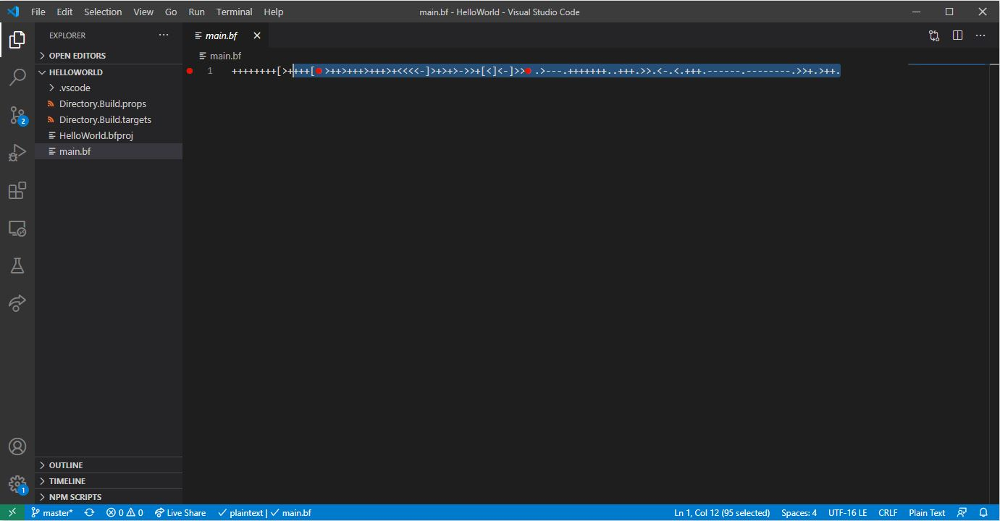
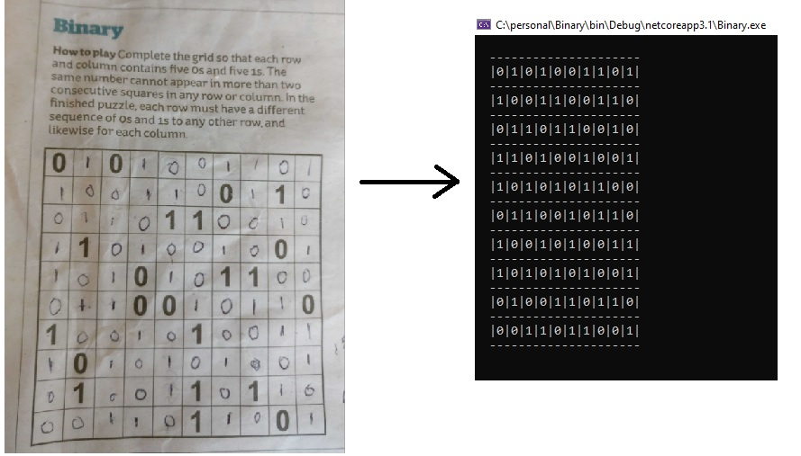

David Betteridge ~ Portfolio

I'm a fan of newspaper logic puzzles, both solving them with pen and paper and also by writing computer programs to solve them.

Some of the non-work related projects I've worked on are listed below
bf.net
Inspired by Immo Landwerth's (@terrajobst) series of talks I wrote my own compiler (bf.net) for the BrainF**k language. This demonstrates the full process from parsing the source code, performing analysis and optimisations right through to the generation of debuggable IL code.
Binary Puzzle Solvers
I'm a fan of newspaper logic puzzles, both solving them with pen and paper and also by writing computer programs to solve them.
Tetris
A basic implementation of Tetris using C# Win Forms
2048
A basic implementation of the 2048 game using C# Win Forms
Advent of Code 2018
My solutions to all of the advent of code problems in 2017
Advent of Code 2019
My solutions to all of the advent of code problems in 2018.
Z80 Emulator
An implementation of Z80 assembly language using Test driven development in C#
SQL Server Free Space Viewer
A tool for visualising free space in GAM pages in a SQL Server database.